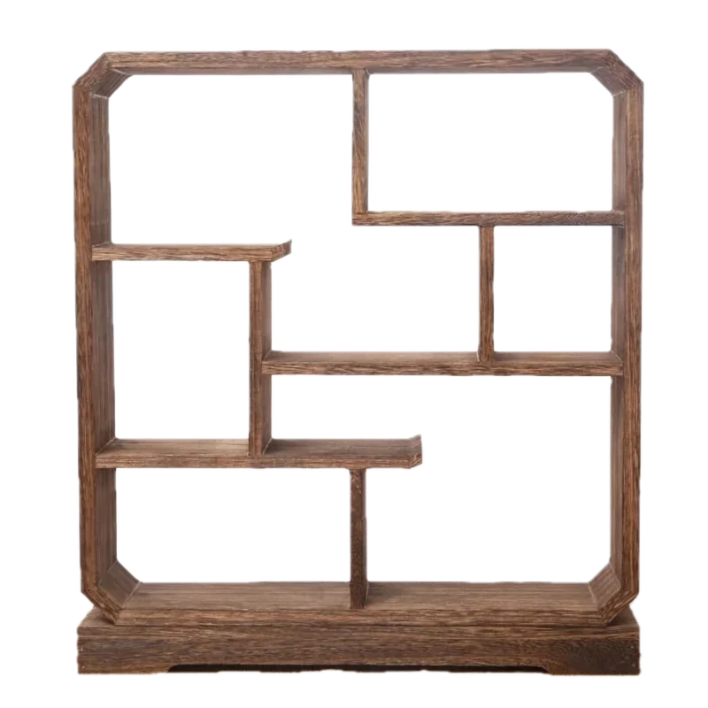
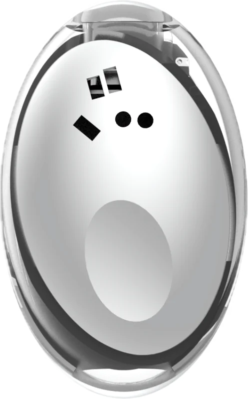
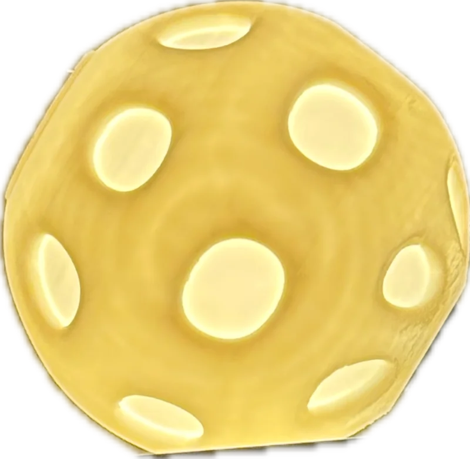
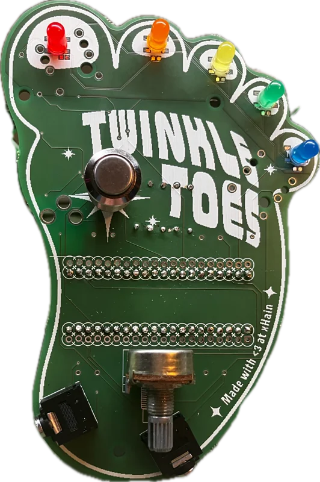
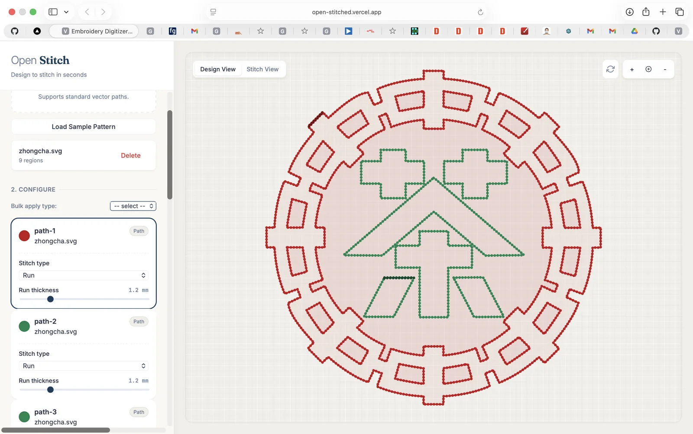

Puck v0 · Era Labs
Custom PCB design for a compact wearable: schematic capture, component selection, and layout.
Visit Era ↗ (opens in a new tab)Creative technologist · Research prototyper
I’m Becky. I build playful, useful interfaces between people, AI, and the physical world.
Sometimes that’s an object you talk to.
Sometimes it’s a tea tray that makes music.


wearable hardware ↙
objects with character ↙
playable electronics ↙
tools for making ↙ CURIOSITY, MADE TANGIBLE.Real objects. Working software. Room for another idea.
Hold an object. Say what’s on your mind. Give that thought a useful next step.
I built a handheld note-taking system that categorizes speech into actions, shopping items, or calendar intentions. It explores how AI can fit into an everyday gesture, beyond a chat window.
Can a physical object make capturing an intention feel as immediate as saying it?
A handheld interface and speech categorization workflow, connecting an ordinary human action to structured information.
A smaller, more intentional interaction with AI: capture a thought now, organize it for later.
Illustrative examples, not live AI. No microphone or data collection.
An everyday ritual becomes an instrument.
I built an interactive gongfu tea tray synthesizer, using AI as part of the making process. It brings together two things I love: tea and playful electronics.
What happens when the familiar setting of a tea ritual becomes a playful musical interface?
An interactive gongfu tea tray synthesizer, developed with some AI assistance. The ritual itself is the starting point for the interface.
How physical context can suggest a different way to interact with sound. The vessels above are a new browser illustration of that idea, not a recreation of the original hardware mappings.
A shorter path from “what if?” to a schematic you can work with.
I built an interactive simulator for trying different CMOS components, with schematic export to KiCad. It connects hands-on exploration to the tools used to design real electronics.
Can experimenting with components and making a usable schematic feel like one continuous process?
An interactive CMOS circuit simulation tool that produces a KiCad schematic, developed with AI as part of the project workflow.
Creative tooling that keeps an exploratory interface connected to a practical engineering output.
Conceptual diagram; not a screenshot or embedded simulator.
From a design to an embroidery machine, without the Inkscape detour.
I built a simpler interface for generating machine-readable embroidery files, with a custom vectorization pipeline connecting a React frontend and Node backend.
Explore Open Stitch (opens in a new tab)Why should using an embroidery machine require navigating a separate vector-design application first?
A full-stack design-to-file workflow with a custom vectorization pipeline. The interface brings design and stitch controls into one place.
Removing friction between creative intent and a physical output. The work combines product design, UI/UX, and full-stack development.
See the project post ↗ (opens in a new tab)Custom PCB design for a compact wearable: schematic capture, component selection, and layout.
Visit Era ↗ (opens in a new tab)An open-source, foot-shaped guitar pedal. Custom PCB, hand assembly, and firmware on a Daisy Seed.
Explore the source ↗ (opens in a new tab)A parametric lamp designed in Fusion 360 and brought into the world with 3D printing.
I think by making things.
My projects move between circuits, code, sound, and everyday rituals. I’m interested in what happens when an idea leaves the screen and becomes something a person can actually use.
I use AI as part of the prototyping process, and explore AI as part of the interface itself. Across both, the question stays human: what could this let someone do?
I’m interested in creative technology and research prototyping roles with teams exploring new ways to interact with AI.